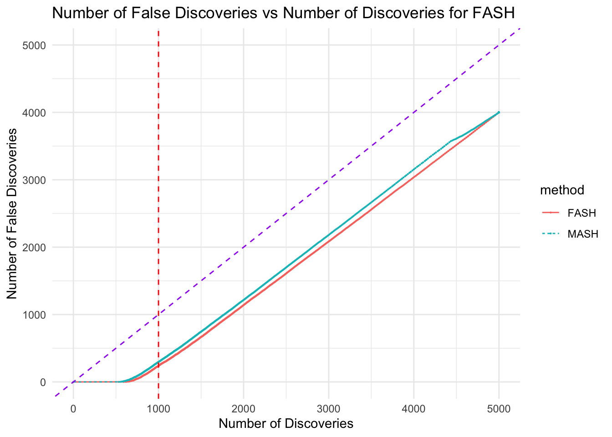

Last updated: 2024-12-13
Checks: 7 0
Knit directory: FASHresultsummary/
This reproducible R Markdown analysis was created with workflowr (version 1.7.1). The Checks tab describes the reproducibility checks that were applied when the results were created. The Past versions tab lists the development history.
Great! Since the R Markdown file has been committed to the Git repository, you know the exact version of the code that produced these results.
Great job! The global environment was empty. Objects defined in the global environment can affect the analysis in your R Markdown file in unknown ways. For reproduciblity it’s best to always run the code in an empty environment.
The command set.seed(20240507) was run prior to running
the code in the R Markdown file. Setting a seed ensures that any results
that rely on randomness, e.g. subsampling or permutations, are
reproducible.
Great job! Recording the operating system, R version, and package versions is critical for reproducibility.
Nice! There were no cached chunks for this analysis, so you can be confident that you successfully produced the results during this run.
Great job! Using relative paths to the files within your workflowr project makes it easier to run your code on other machines.
Great! You are using Git for version control. Tracking code development and connecting the code version to the results is critical for reproducibility.
The results in this page were generated with repository version bbea11c. See the Past versions tab to see a history of the changes made to the R Markdown and HTML files.
Note that you need to be careful to ensure that all relevant files for
the analysis have been committed to Git prior to generating the results
(you can use wflow_publish or
wflow_git_commit). workflowr only checks the R Markdown
file, but you know if there are other scripts or data files that it
depends on. Below is the status of the Git repository when the results
were generated:
Ignored files:
Ignored: .DS_Store
Ignored: .Rhistory
Ignored: .Rproj.user/
Ignored: analysis/.DS_Store
Ignored: analysis/.Rhistory
Ignored: code/.DS_Store
Ignored: code/.Rhistory
Ignored: code/cpp/.DS_Store
Ignored: code/function/.DS_Store
Ignored: data/.DS_Store
Ignored: data/Iyer/.DS_Store
Ignored: data/expression_data/.DS_Store
Ignored: output/.DS_Store
Ignored: output/Iyer/.DS_Store
Ignored: output/example/.DS_Store
Ignored: output/example/figure/
Ignored: output/expression/.DS_Store
Ignored: output/simulation_pollution/.DS_Store
Ignored: output/simulation_pollution/figure/
Note that any generated files, e.g. HTML, png, CSS, etc., are not included in this status report because it is ok for generated content to have uncommitted changes.
These are the previous versions of the repository in which changes were
made to the R Markdown (analysis/simulation_vQTL.Rmd) and
HTML (docs/simulation_vQTL.html) files. If you’ve
configured a remote Git repository (see ?wflow_git_remote),
click on the hyperlinks in the table below to view the files as they
were in that past version.
| File | Version | Author | Date | Message |
|---|---|---|---|---|
| Rmd | bbea11c | Ziang Zhang | 2024-12-13 | workflowr::wflow_publish("analysis/simulation_vQTL.Rmd") |
| html | 6220395 | Ziang Zhang | 2024-12-12 | Build site. |
| Rmd | 61e22a4 | Ziang Zhang | 2024-12-12 | workflowr::wflow_publish("analysis/simulation_vQTL.Rmd") |
In this example, we examined the performance of FASH in detecting vQTLs based on the output from quantile regression. For a given SNP \(G\) and a continuous trait \(Y\), the quantile regression model is given by \[ Q_Y(\tau|G = g) = g\beta(\tau), \] where \(Q_Y(\tau|G = g)\) is the \(\tau\)-th quantile of \(Y\) given \(G = g\), and \(\beta(\tau)\) is the effect size of \(G\) on the \(\tau\)-th quantile of \(Y\).
In Miao et al., 2022, the authors proposed an approach called QUAIL, which uses quantile regression to detect vQTLs. Specifically, if the SNP \(G\) has effect on the variance of \(Y\), then its quantile effect \(\beta(\tau)\) will be different across different quantiles \(\tau\). In other words, the effect size \(\beta(\tau)\) will not be a constant function of \(\tau\).
To test this hypothesis, the quantile effect \(\beta(\tau)\) is estimated for each quantile \(\tau\), with estimates \(\hat{\beta}(\tau)\) and standard errors \(SE(\hat{\beta}(\tau))\). QUAIL then assesses the evidence of vQTLs by looking at the integrated effect \(\beta_{QI} = \int_{0}^{0.5}[\beta(1-\tau) - \beta(\tau)]d\tau\). If the null hypothesis of no vQTLs is true, then \(\beta_{QI}\) should be close to zero.
The applications of quantile regression on biobank data can also be found at Pozarickij et al., 2019 and Wang et al., 2024, where the detected vQTLs were then linked to evidence of GxE or GxG interactions.
Now, we will try to approach this problem using the FASH method. Specifically, for each of the \(N\) SNPs \(\{G_1, ..., G_N\}\), we compute their quantile regression effects \(\{\hat{\beta}_i(\tau_j)\}\) and standard errors \(\{SE(\hat{\beta}_i(\tau_j))\}\), at a set of quantiles \(\{\tau_1, ..., \tau_J\}\). We then assume the following model for the estimated quantile effects: \[ \hat{\beta}_i(\tau_j) \overset{ind}{\sim} N(\beta_i(\tau_j), SE(\hat{\beta}_i(\tau_j))^2), \] where \(\beta_i(\tau)|\pi_0,...,\pi_K \overset{iid}{\sim} \sum_{k=0}^{K} \pi_k\text{IWP}_1(\sigma_k)\). For a function \(g \sim \text{IWP}_1(\sigma)\), the prior is given by: \[ \frac{\partial}{\partial \tau}\beta(\tau) = \sigma_k\xi(\tau), \] where \(\beta(0)\) is assigned a diffuse prior and \(\xi(\tau)\) is the standard Gaussian white noise.
The weight \(\pi_0\) corresponds to the base model where \(\sigma_0 = 0\) and \(\beta(\tau) = \text{span}\{1\}\).
To assess the performance of FASH, we simulate \(N = 10000\) datasets of G and Y.
The true effect, if exists, is assumed to be normally distributed
with mean 0 and standard deviation beta_sd.
Once the data is simulated, we can perform quantile regression on each dataset to obtain the estimates \(\hat{\beta}(\tau)\) and standard errors \(SE(\hat{\beta}(\tau))\).
Here we can visualize one example of the quantile regression results.
| Version | Author | Date |
|---|---|---|
| 6220395 | Ziang Zhang | 2024-12-12 |
Now, let’s do the simulation with FASH:
# Parameters
set.seed(123) # For reproducibility
n <- 20000 # Number of observations per dataset
maf <- 0.3 # Minor allele frequency
beta_sd <- 0.3 # Effect size standard deviation
sigma <- 1 # Standard deviation
tau_vec <- seq(0.1, 0.9, by = 0.1) # Quantiles for regression
N_A <- 500; N_B <- 500; N_C <- 500; N_D <- 3500 # Number of datasets for each case
num_datasets <- N_A + N_B + N_C + N_D # Total number of datasets
# Initialize matrices to store beta estimates and standard errors
beta_matrix <- matrix(NA, nrow = num_datasets, ncol = length(tau_vec))
se_matrix <- matrix(NA, nrow = num_datasets, ncol = length(tau_vec))
# Generate datasets and perform quantile regression
for (i in 1:num_datasets) {
if (i <= N_A) {
case <- "variance"
} else if (i <= (N_A + N_B)) {
case <- "mean"
} else if (i <= (N_A + N_B + N_C)) {
case <- "both"
} else {
case <- "none"
}
# Simulate the data
data <- simulate_data(n = n, maf = maf, beta_sd = beta_sd, sigma = sigma, case = case)
# Perform quantile regression
result <- perform_rq(data, tau_vec = tau_vec, bootstrap = F)
# print how many datasets have been simulated in a message
if(i %% 100 == 0){
print(paste0(i, " datasets have been simulated."))
}
# Store beta estimates and standard errors
beta_matrix[i, ] <- result$beta
se_matrix[i, ] <- result$se
}
# Output matrices
print(dim(beta_matrix)) # Check dimensions
print(dim(se_matrix)) # Check dimensionsp_vec <- 1
psd_vec <- seq(0, 0.5, length = 50)
# Using the FEM:
L_vecs <- mclapply(datasets, function(dataset) {
compute_log_likelihood_ospline_seq2(
x = dataset$tau,
y = dataset$beta,
p = p_vec,
num_knots = 10,
psd_iwp_vector = psd_vec,
pred_step = 1/10,
betaprec = 1e-6,
sd_gaussian = dataset$se
)
}, mc.cores = 1)
L_matrix <- do.call(rbind, L_vecs)
save(L_matrix, file = paste0(result_dir, "/L_matrix.rda"))Learning the prior weights by EB: (with possible penalty term)
prior_null_lambda = 1
if(prior_null_lambda > 1){
prior_null <- matrix(0, nrow = (prior_null_lambda-1), ncol = ncol(L_matrix))
prior_null[,1] <- 1
L_matrix_original <- rbind(exp(L_matrix), prior_null)
fit.sqp <- mixsqp(L = L_matrix_original, log = FALSE, control = list(tol.svd = 0))
}else{
fit.sqp <- mixsqp(L = L_matrix, log = TRUE, control = list(tol.svd = 0))
}Running mix-SQP algorithm 0.3-54 on 5000 x 50 matrix
convergence tol. (SQP): 1.0e-08
conv. tol. (active-set): 1.0e-10
zero threshold (solution): 1.0e-08
zero thresh. (search dir.): 1.0e-14
l.s. sufficient decrease: 1.0e-02
step size reduction factor: 7.5e-01
minimum step size: 1.0e-08
max. iter (SQP): 1000
max. iter (active-set): 20
number of EM iterations: 10
iter objective max(rdual) nnz stepsize max.diff nqp nls
1 +7.078216772e-01 -- EM -- 50 1.00e+00 1.55e-01 -- --
2 +6.217476781e-01 -- EM -- 48 1.00e+00 6.83e-02 -- --
3 +6.058465200e-01 -- EM -- 35 1.00e+00 3.76e-02 -- --
4 +5.993127379e-01 -- EM -- 30 1.00e+00 2.52e-02 -- --
5 +5.952752725e-01 -- EM -- 27 1.00e+00 1.91e-02 -- --
6 +5.924442531e-01 -- EM -- 25 1.00e+00 1.56e-02 -- --
7 +5.903640093e-01 -- EM -- 24 1.00e+00 1.33e-02 -- --
8 +5.887899615e-01 -- EM -- 23 1.00e+00 1.17e-02 -- --
9 +5.875703750e-01 -- EM -- 22 1.00e+00 1.03e-02 -- --
10 +5.866060570e-01 -- EM -- 21 1.00e+00 9.27e-03 -- --
1 +5.858300717e-01 +2.967e-02 21 ------ ------ -- --
2 +5.796489016e-01 +1.459e-02 6 1.00e+00 3.66e-01 20 1
3 +5.794165156e-01 +1.682e-03 6 1.00e+00 5.17e-02 4 1
4 +5.794147284e-01 +4.066e-05 5 1.00e+00 2.23e-03 3 1
5 +5.794147276e-01 -1.778e-08 5 1.00e+00 4.96e-05 2 1
Optimization took 0.06 seconds.
Convergence criteria met---optimal solution found.numiter <- nrow(fit.sqp$progress)
prior_weight <- data.frame(p = rep(p_vec, each = length(psd_vec)), psd_iwp = psd_vec, prior_weight = fit.sqp$x)
prior_weight$prior_weight[1][1] 0.7259555posterior_matrix <- matrix(0, nrow = nrow(L_matrix), ncol = ncol(L_matrix))
for(i in 1:nrow(L_matrix)){
posterior_matrix[i,] <- exp(L_matrix[i,] - max(L_matrix[i,]) + log(fit.sqp$x))
posterior_matrix[i,] <- posterior_matrix[i,]/sum(posterior_matrix[i,])
}
colnames(posterior_matrix) <- paste0(p_vec,"_",psd_vec)
posterior_weights_matrix <- posterior_matrixVisualize the posterior probability for each SNP being in each of the \(K\) classes:
posterior_weights_df <- as.data.frame(posterior_weights_matrix)
posterior_weights_df$id <- 1:nrow(posterior_weights_df)
melted_data <- melt(posterior_weights_df, id.vars = "id")
melted_data$variable2 <- sub("_.*", "", melted_data$variable)
melted_data$variable3 <- (round(as.numeric(sub("*._", "", melted_data$variable)), 3))
ggplot(melted_data, aes(x = factor(id, levels = posterior_weights_df$id), y = value, fill = variable3)) +
geom_bar(stat = "identity") +
labs(x = "SNPs", y = "Weight", fill = "PSD") +
ggtitle("Structure Plot of Posterior Weights") +
coord_flip() +
scale_fill_gradient(low = "white", high = "blue") +
theme(
axis.text.y = element_blank(),
axis.ticks.y = element_blank(),
panel.background = element_rect(fill = "white", colour = "grey"),
plot.background = element_rect(fill = "white", colour = NA)
)
| Version | Author | Date |
|---|---|---|
| 6220395 | Ziang Zhang | 2024-12-12 |
Compute the local false discovery rate (lfdr):
set.seed(123)
lfdr <- posterior_weights_matrix[,1]
fdr_df <- data.frame(eQTL = 1:length(lfdr), fdr = lfdr, type = rep(c("variance", "mean", "both", "none"), times = c(N_A, N_B, N_C, N_D)))
fdr_df <- fdr_df[order(fdr_df$fdr), ] # ordering it
fdr_df$cumulative_fdr <- cumsum(fdr_df$fdr)/seq_along(fdr_df$fdr)
fdr_df$rank <- 1:length(lfdr)
fdr_df$max_fdr <- cummax(fdr_df$fdr)This problem could also be easily solved by MASH, by extracting its
components corresponding to equal_effects. Let’s do it and
compare the result:
fitted_datasets_mash <- list()
# Produce a huge data-matrix, the i-th row being dataset[[i]]$beta
all_data_matrix <- do.call(rbind, lapply(datasets, function(x) x$beta))
SE_matrix <- do.call(rbind, lapply(datasets, function(x) x$se))
# now use mashr:
mash_data <- mashr::mash_set_data(all_data_matrix, SE_matrix)
m.1by1 = mashr::mash_1by1(mash_data)
strong = mashr::get_significant_results(m.1by1, 0.05)
# keep the top 10%
strong <- strong[1:round(0.1*length(strong))]
U.pca = mashr::cov_pca(mash_data, 5, subset = strong)
U.ed = cov_ed(mash_data, U.pca, subset=strong)
U.c = cov_canonical(mash_data)
m = mash(mash_data, c(U.c,U.ed))
# m = mashr::mash(mash_data, U.c)
save(m, file = paste0(result_dir, "/mash_result.rda"))load(paste0(result_dir, "/mash_result.rda"))
mash_post <- m$posterior_weights
## extract the colnames start with "equal_effects"
lfdr_mash <- mash_post[, c(1, grep("equal_effects", colnames(mash_post)))]
# sum each row
lfdr_mash <- rowSums(lfdr_mash)
fdr_df_mash <- data.frame(SNPs = 1:length(lfdr_mash), fdr = lfdr_mash, type = rep(c("variance", "mean", "both", "none"), times = c(N_A, N_B, N_C, N_D)))
fdr_df_mash <- fdr_df_mash[order(fdr_df_mash$fdr), ] # ordering it
fdr_df_mash$cumulative_fdr <- cumsum(fdr_df_mash$fdr)/seq_along(fdr_df_mash$fdr)
fdr_df_mash$rank <- 1:length(lfdr_mash)# Calculate true FDR for FASH and MASH
threshold_vec <- seq(0, 1, by = 0.005)[-1]
fdr_vec_fash <- numeric(length(threshold_vec))
fdr_vec_mash <- numeric(length(threshold_vec))
for (i in 1:length(threshold_vec)) {
num_discoveries_fash <- sum(fdr_df$cumulative_fdr <= threshold_vec[i])
num_false_discoveries_fash <- sum(fdr_df$cumulative_fdr <= threshold_vec[i] & (fdr_df$type == "none" | fdr_df$type == "mean"))
fdr_vec_fash[i] <- num_false_discoveries_fash / num_discoveries_fash
num_discoveries_mash <- sum(fdr_df_mash$cumulative_fdr <= threshold_vec[i])
num_false_discoveries_mash <- sum(fdr_df_mash$cumulative_fdr <= threshold_vec[i] & (fdr_df_mash$type == "none" | fdr_df_mash$type == "mean"))
fdr_vec_mash[i] <- num_false_discoveries_mash / num_discoveries_mash
}
# Create a data frame for plotting
fdr_df_fash <- data.frame(threshold = threshold_vec, true_fdr = fdr_vec_fash, method = "FASH")
fdr_df_fash_for_plotting <- data.frame(threshold = threshold_vec, true_fdr = fdr_vec_fash, method = "FASH")
fd_df_mash <- data.frame(threshold = threshold_vec, true_fdr = fdr_vec_mash, method = "MASH")
fdr_df_mash_for_plotting <- data.frame(threshold = threshold_vec, true_fdr = fdr_vec_mash, method = "MASH")
# Combine data for plotting
fdr_df_combined <- rbind(fdr_df_fash_for_plotting, fdr_df_mash_for_plotting)
# Plot the nominal FDR vs true FDR for both methods
ggplot(fdr_df_combined, aes(x = threshold, y = true_fdr, color = method)) +
geom_line() +
# geom_point() +
geom_abline(intercept = 0, slope = 1, linetype = "dashed", color = "purple") +
labs(x = "Nominal False Discovery Rate", y = "Actual False Discovery Rate") +
theme_minimal() +
coord_cartesian(xlim = c(0, 1), ylim = c(0, 1)) +
geom_hline(yintercept = (N_A + N_D)/num_datasets, linetype = "dashed", color = "red") +
ggtitle("Nominal FDR vs Actual FDR Curves for FASH and MASH")
| Version | Author | Date |
|---|---|---|
| 6220395 | Ziang Zhang | 2024-12-12 |
threshold_vec <- seq(0, 1, by = 0.001)
num_discoveries_vec_fash <- numeric(length(threshold_vec))
num_false_discoveries_vec_fash <- numeric(length(threshold_vec))
num_discoveries_vec_mash <- numeric(length(threshold_vec))
num_false_discoveries_vec_mash <- numeric(length(threshold_vec))
for (i in 1:length(threshold_vec)) {
num_discoveries_vec_fash[i] <- sum(fdr_df$cumulative_fdr < threshold_vec[i])
num_false_discoveries_vec_fash[i] <- sum(fdr_df$cumulative_fdr < threshold_vec[i] & (fdr_df$type == "none" | fdr_df$type == "mean"))
num_discoveries_vec_mash[i] <- sum(fdr_df_mash$cumulative_fdr < threshold_vec[i])
num_false_discoveries_vec_mash[i] <- sum(fdr_df_mash$cumulative_fdr < threshold_vec[i] & (fdr_df_mash$type == "none" | fdr_df_mash$type == "mean"))
}
num_discoveries_df_fash <- data.frame(threshold = threshold_vec, num_discoveries = num_discoveries_vec_fash, num_false_discoveries = num_false_discoveries_vec_fash, method = "FASH")
num_discoveries_df_mash <- data.frame(threshold = threshold_vec, num_discoveries = num_discoveries_vec_mash, num_false_discoveries = num_false_discoveries_vec_mash, method = "MASH")
# combined for plotting
num_discoveries_df_combined <- rbind(num_discoveries_df_fash, num_discoveries_df_mash)
ggplot(num_discoveries_df_combined, aes(x = num_discoveries, y = num_false_discoveries, color = method)) +
geom_line(aes(linetype = method)) +
geom_point(size = 0.1) +
geom_abline(intercept = 0, slope = 1, linetype = "dashed", color = "purple") +
labs(x = "Number of Discoveries", y = "Number of False Discoveries") +
theme_minimal() +
geom_vline(xintercept = (N_A + N_C), linetype = "dashed", color = "red") +
ggtitle("Number of False Discoveries vs Number of Discoveries for FASH") +
coord_cartesian(xlim = c(0, num_datasets), ylim = c(0, num_datasets))
| Version | Author | Date |
|---|---|---|
| 6220395 | Ziang Zhang | 2024-12-12 |
# plot power versus FDR
power_vec_fash <- (num_discoveries_df_fash$num_discoveries - num_discoveries_df_fash$num_false_discoveries) / (N_A + N_C)
power_df_fash <- data.frame(threshold = num_discoveries_df_fash$threshold, power = power_vec_fash, method = "FASH")
power_vec_mash <- (num_discoveries_df_mash$num_discoveries - num_discoveries_df_mash$num_false_discoveries) / (N_A + N_C)
power_df_mash <- data.frame(threshold = num_discoveries_df_mash$threshold, power = power_vec_mash, method = "MASH")
power_df_combined <- rbind(power_df_fash, power_df_mash)
ggplot(power_df_combined, aes(x = threshold, y = power, color = method)) +
geom_line() +
geom_point(size = 0.1) +
labs(x = "Nominal False Discovery Rate", y = "Power") +
theme_minimal() +
coord_cartesian(xlim = c(0, 1), ylim = c(0, 1)) +
ggtitle("Power vs Nominal FDR Curves for FASH and MASH")
| Version | Author | Date |
|---|---|---|
| 6220395 | Ziang Zhang | 2024-12-12 |
sessionInfo()R version 4.3.1 (2023-06-16)
Platform: aarch64-apple-darwin20 (64-bit)
Running under: macOS Monterey 12.7.4
Matrix products: default
BLAS: /Library/Frameworks/R.framework/Versions/4.3-arm64/Resources/lib/libRblas.0.dylib
LAPACK: /Library/Frameworks/R.framework/Versions/4.3-arm64/Resources/lib/libRlapack.dylib; LAPACK version 3.11.0
locale:
[1] en_US.UTF-8/en_US.UTF-8/en_US.UTF-8/C/en_US.UTF-8/en_US.UTF-8
time zone: America/Chicago
tzcode source: internal
attached base packages:
[1] parallel splines stats graphics grDevices utils datasets
[8] methods base
other attached packages:
[1] quantreg_5.98 SparseM_1.84-2 mashr_0.2.79 ashr_2.2-66
[5] lubridate_1.9.3 forcats_1.0.0 stringr_1.5.1 dplyr_1.1.4
[9] purrr_1.0.2 readr_2.1.5 tidyr_1.3.1 tibble_3.2.1
[13] tidyverse_2.0.0 mixsqp_0.3-54 reshape2_1.4.4 ggplot2_3.5.1
[17] Matrix_1.6-4 TMB_1.9.15 BayesGP_0.1.3 workflowr_1.7.1
loaded via a namespace (and not attached):
[1] gtable_0.3.6 xfun_0.48 bslib_0.8.0 processx_3.8.4
[5] lattice_0.22-6 callr_3.7.6 tzdb_0.4.0 vctrs_0.6.5
[9] tools_4.3.1 ps_1.8.0 generics_0.1.3 fansi_1.0.6
[13] highr_0.11 pkgconfig_2.0.3 SQUAREM_2021.1 assertthat_0.2.1
[17] truncnorm_1.0-9 lifecycle_1.0.4 farver_2.1.2 compiler_4.3.1
[21] git2r_0.33.0 MatrixModels_0.5-3 munsell_0.5.1 getPass_0.2-4
[25] httpuv_1.6.15 htmltools_0.5.8.1 sass_0.4.9 yaml_2.3.10
[29] later_1.3.2 pillar_1.9.0 jquerylib_0.1.4 whisker_0.4.1
[33] MASS_7.3-60 rmeta_3.0 cachem_1.1.0 abind_1.4-8
[37] tidyselect_1.2.1 digest_0.6.37 mvtnorm_1.3-1 stringi_1.8.4
[41] labeling_0.4.3 rprojroot_2.0.4 fastmap_1.2.0 grid_4.3.1
[45] invgamma_1.1 colorspace_2.1-1 cli_3.6.3 magrittr_2.0.3
[49] survival_3.7-0 utf8_1.2.4 withr_3.0.2 scales_1.3.0
[53] promises_1.3.0 timechange_0.3.0 rmarkdown_2.28 httr_1.4.7
[57] hms_1.1.3 evaluate_1.0.1 knitr_1.48 irlba_2.3.5.1
[61] rlang_1.1.4 Rcpp_1.0.13-1 glue_1.8.0 rstudioapi_0.16.0
[65] jsonlite_1.8.9 R6_2.5.1 plyr_1.8.9 fs_1.6.4